Salted Leeches
An investigation into a Chinese online scam ring infrastructure
Tl;dr
CyberCyberLabs security researches Noam Rotem and Ran Locar have exposed a large scam operation believed to be operated by a Chinese criminal organizations and targeting vulnerable gig-job seekers in the US, UK, and Europe. The operation uses somewhat known brands, usually of rising start-ups but sometimes established companies like Booking, Expedia, and Spotify, and creates fake websites masquerading as these companies. It then publishes "remote work" ads, sometimes on fake websites they build themselves, and directly contact victims via WhatsApp. The research exposes dozens of platforms used to scam people in a "recharge scam", providing a unique view of their network infrastructure, back-office systems, crypto wallets containing tens of millions of US dollars siphoned from the victims, as well as their entire database of operations, transactions, and identities. It also includes WhatsApp chats between the victims and the operators, along with technical evidence pointing towards Chinese individuals operating from Hong Kong,mainland China, Cambodia, and Myanmar.
It is very important to stress: None of the companies mentioned in this report are associated with the scammers. Their names were simply dragged into the scam by the operators of the scam network.
None of the companies were breached, nor did the operators of this scam networks get a foothold inside their infrastructure. They only leveraged their brand reputation in order to scam innocent people looking for a job.
Full disclosure: The criminal organization targeted a company where mr. Rotem, one of the authors of this report, is acting as CTO.
The scam
During the work on this project we have been in contact with several victims who were scammed. They were kind enough to provide us with WhatsApp communication between them and the scammers, as well as inside understanding of the different stages of the scam.
The following section is a summary of their stories as well as a lot of technical evidence, including access to the scammers back-office systems.
Step 1: The Approach
Several victims said they were contacted by a WhatsApp account "regarding a recent job application". For example, in Sweden, the scammers used the site worklifthub[.]com, and then moved to employfocushub[.]com to create a trusted context for the initial approach. The domains were registered in late December 2024 and early January 2025, in Turkey and the Bahamas. Other cases used totally legitimate job-seeking websites, so the approach seemed more natural. The texts are always cheerful, full of positive emojis, and almost always reply very quickly.
The recruiters introduce themselves as employees of a branch in a non-brand company, but one that yields positive google results; these are mostly B2B companies that are not known to the general public, but are known within the industry. If the victim searches for the name of the company, they will find a lot of information from trusted sources. The scammers register multiple domains with permutations around the target company name (they have an affinity to the .top tld) reflecting the type of work. for example, they would register [company]-seo.top and [company]ppc.cc if the "job" is related to SEO or PPC advertising. They also register a unique high-entropy domain to be their back-office gateway.
The sites are well built, and the victims, who are often blinded by the prospect of employment, are often persuaded that this is a real website.
Step 2: The Job
All of the platforms we've investigated are very similar in the "jobs" they offer. While the details vary, in most cases the role of the employee is to write reviews to products promoted by the original company. However, these reviews are not going anywhere. there's even an "Automatic Comment" button on some of the sites. Their sole purpose is to keep the victim busy, give them a sense of doing something of value, and to prepare them for the next phase.
For each review entered by the victims, they receive between 10-70 cents, depending on the industry. There are limits on the number of "tasks" each employee can do per day, usually newcomers have a limit of 50 tasks per day, putting the potential profit from this job at around $5-$35 per day. Still, not bad for an easy work-from-home gig that takes up to an hour to complete
Step 3: The Opportunity
After a few days of doing the menial work described in the previous step, opportunity knocks.
When the victim logs in and tries to complete their daily tasks, they are presented with an error. There are not enough funds in their balance to keep working. When they contact customer service (yes, each site has a dedicated customer service system, and a very efficient one at that) they are surprised to find out that they can now make much more money! Instead of getting paid cents for their boring work, they can now make tens, sometimes hundreds of dollars per task.
There is a small hickup, though. The higher value tasks require a certain balance, which is always slightly above what the user has. If only there was a way for them to get this task done they could triple their investment. High value tasks could include purchasing a product for an end-customer on behalf of the 'company', under the promise that the employee would be rewarded.
For example, the "company" needs to buy a certain product for a certain client, but alas, they can't do it right now. If only the loyal employee would be able to make this purchase, when the end-customer pays this loyalty would be rewarded greatly. If the employee agrees, they must send a certain type of cryptocurrency (usually ETH tokens like USDC or USDT to a wallet address given to them by the operators. If not, at great risk to themselves, the handlers of the victim are willing to "gift" this money out of the goodness of their heart.
When the deal goes through, the victim is overjoyed to see his balance increases, and in many cases will issue a withdrawal, which will be fulfilled. When the employee then wants to make another "task", their balance is not high enough, so they need to re-charge their balance. This is where the name re-charge fraud comes from, and this is exactly how it works. The employee keeps loading their own funds into the scammers wallets just so they can keep on working.
Step 4: The slaughter
By the time they realize what's going on, their withdrawal requests are ignored, and their accounts are frozen. The victim was butchered, taken for thousands, sometimes tens of thousands of their hard earned currency, and is left with nothing.
Some of the victims realize the scam when they try to reach out to the real company the scammers are impersonating, only to learn there is no "UK branch", and that the real company had nothing to do with the "work" they were "hired" to do. Going to the police doesn't help either, as the crime was out of the local jurisdiction, and the perpetrators are unknown. This is how the scammers harvest tens of millions of dollars from vulnerable victims, looking for a low paying job, and ending up in a much worse situation than before they started working.
The systems
Each such operation is split into 2 systems. One is referred to as "the front-end", this is the fake website where the "work" of the employees take place. Let's take for example the website pretending to belong to an asset tokenization platform "Norion".
The Front-End
This is how the front-end log-in page looks like. Notice the domain "norionppc.top", which is how the "job" is marketed to the victims. "It's an SEO/PPC operation, nothing shady":
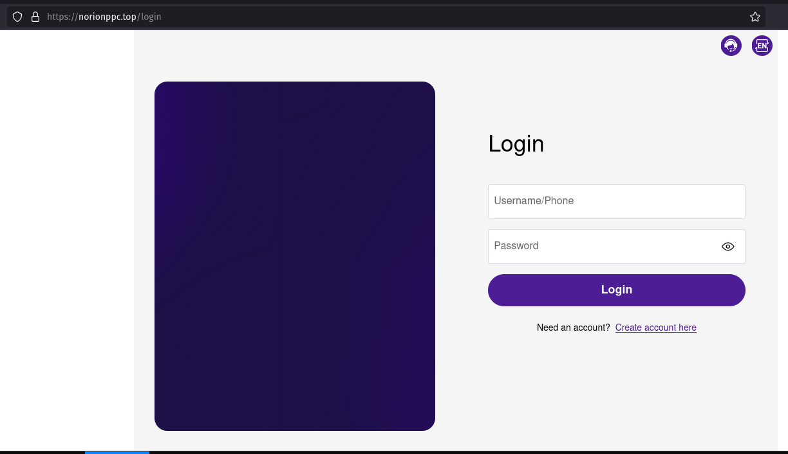
Right after the user logs in, they are presented with what the scammers call a "certificate". A fake image designed to inspire trust. In some cases it's "signed" by the CEO of the company, in this case, it's advertising a $300 million bonus that will be distributed between the employees based on their performance up to $10 million per person:
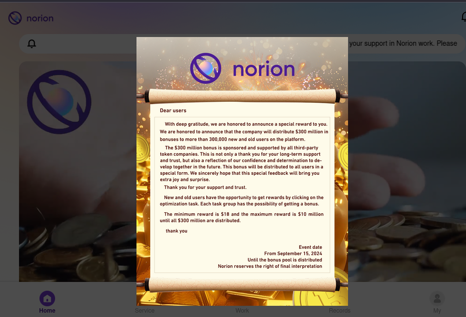
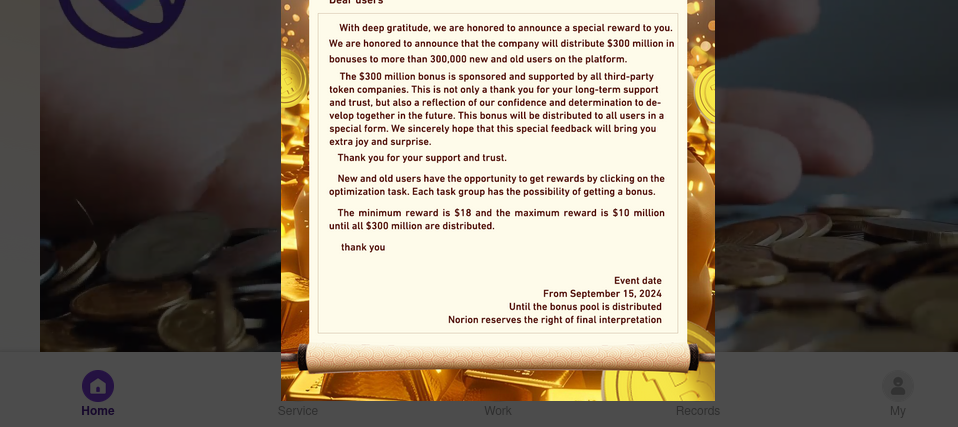
Then an impressive corporate video is displayed, and the employees can start their daily tasks
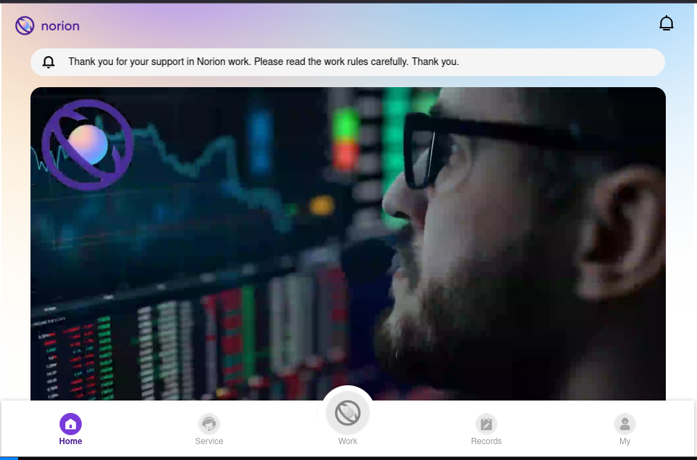
the big "work" button in the bottom center of the page, leads the user to a gamified version of what a lemur thinks people who work in an office do:
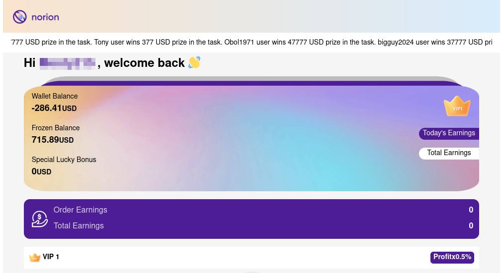
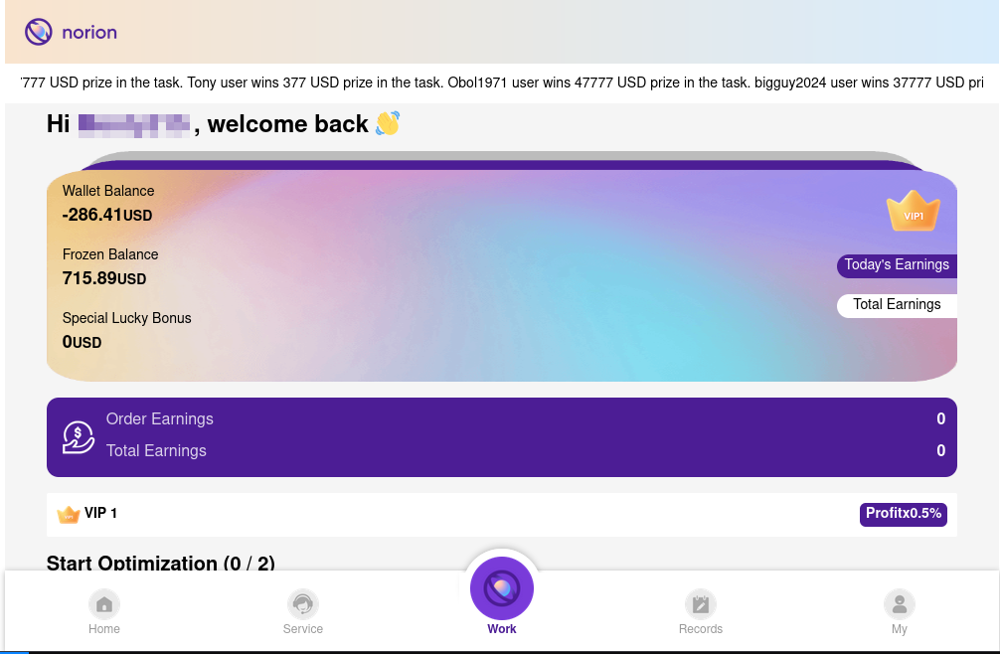
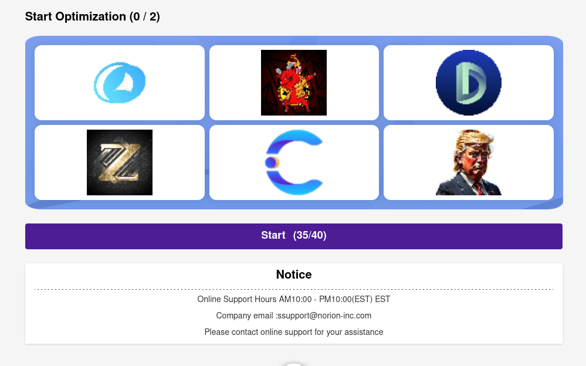
Clicking on "Start" shows a modal with a "Task". It shows the amount of the transaction, and the expected profit from it.
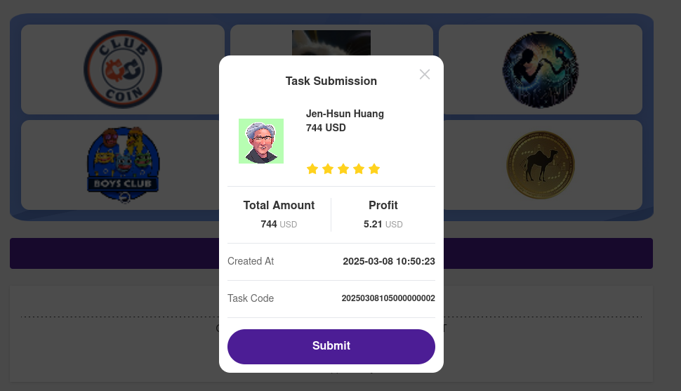
Clicking "Submit" simply says "Task submitted", that's all this "work" is. The employee balance is deducted until the transaction is approved, and that's it. The employee now expects a profit of $5.21 to be added to their balance once it's done. $5.21 for clicking a button, not a bad job to have.
Another part of the "front-end" includes a way to withdraw or deposit funds, as well as seeing the transactions history. Here you can see that the user started off as described in "Step 2" of the scam, making a few cents per "task". They received a $10 "sign-up" bonus at January 25th so that they can start working, and immediately started making money:
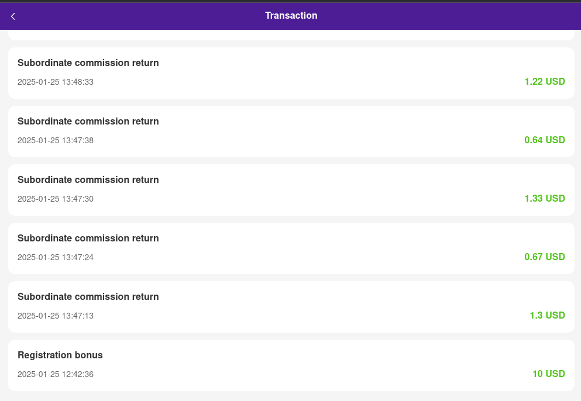
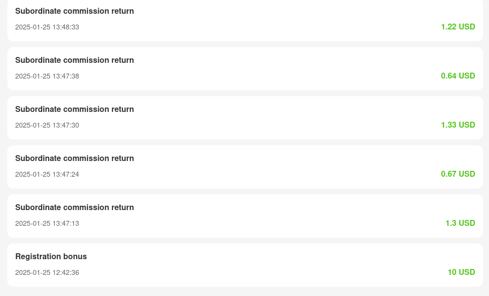
This is how their "profit" is explained:
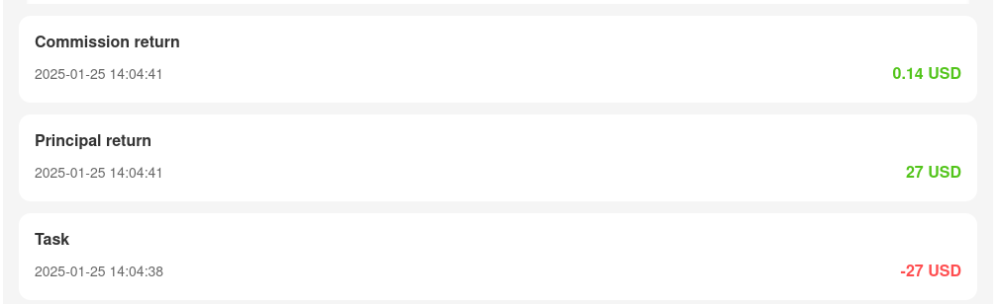
You put it a certain amount ($27 in the example above), you get it back + a commission, in this case, due to the low value of the original transaction, it's 14 cents.
only 3 hours into the job, the employee is stuck and is convinced to deposit $30 so that they can continue. after this, their commission rises to 30 cents. A 100% increase in just a few hours, not bad.
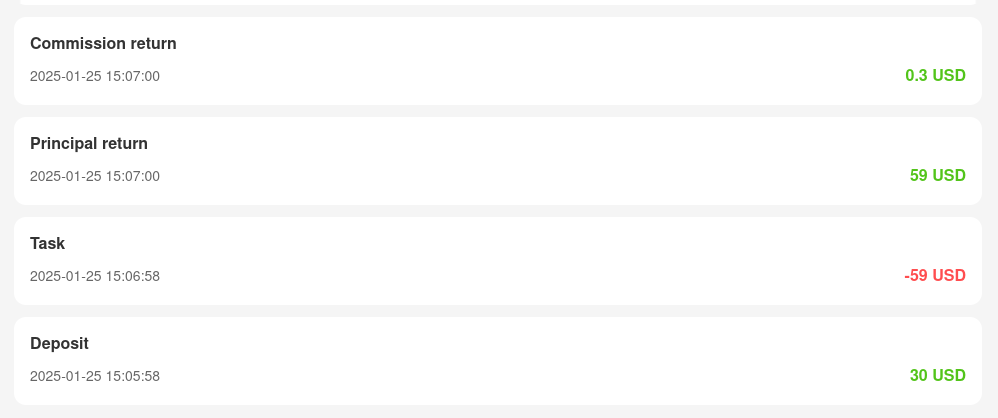
However, only 4 days into the work, the commission suddenly spike. no more $0.14, it's now $11.21 per task! a whopping 7907%! this employee is a meteor!
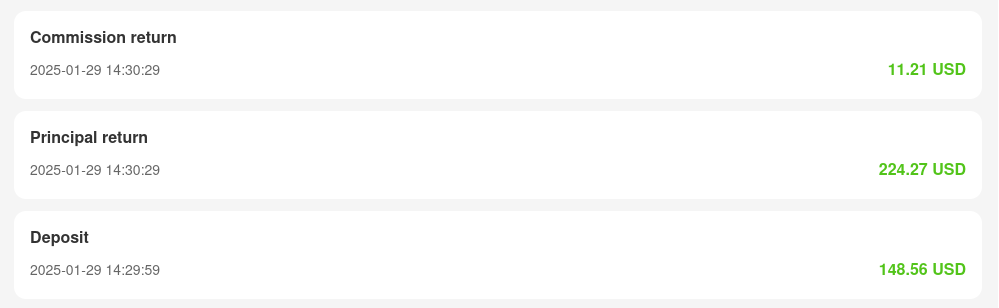
The employee is ecstatic, deposits are pouring in, until one day - poof - they can't withdraw any more.
The Back-End
Meanwhile, the operators of the platform, uses a completely different system, they call "The Back-End" or "The Marketing". A dashboard with nice graphs and summaries is presented to the administrators:
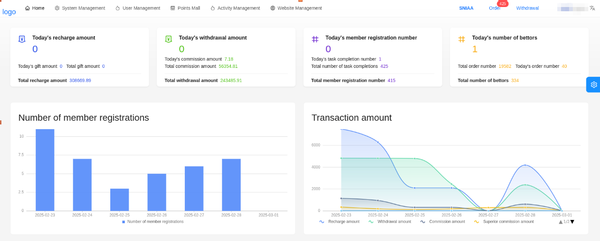
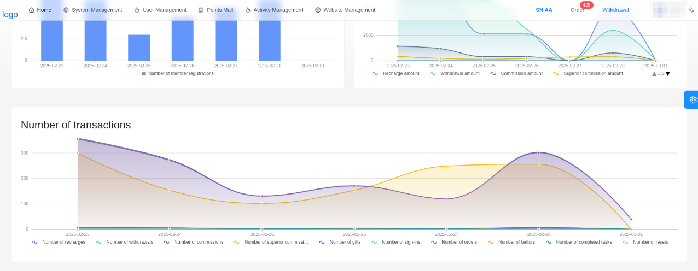
However, unlike the front-end which is supports no less than 12 languages, the Back-End supports only 2: English and Chinese. Target audiences are clear.
| Front-End languages | Back-End languages |
|---|
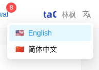
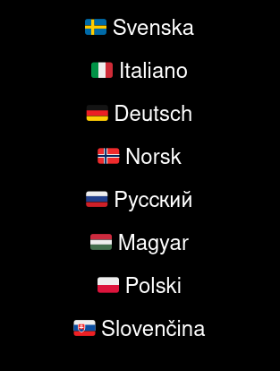
It allows full control over the "front-end" and its users, which are called "members", allowing the "users", who are the operators of the scam and their accomplices, full control over their status. They can "gift" funds for users, they can reduce them, freeze them, and watch their behavior:
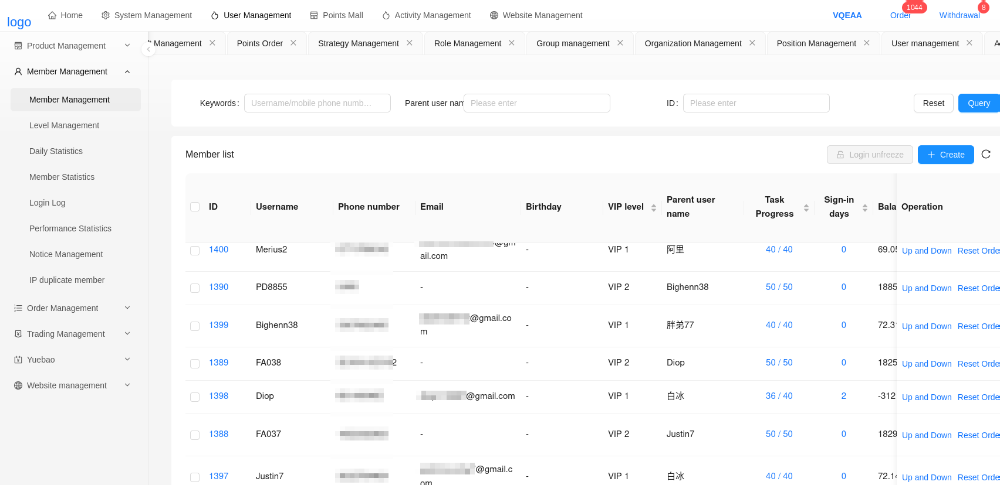
The systems we have observed while working on this report hold between hundreds and thousands of "members" each, including their contact details, crypto wallets, IP addresses showing their locations, and the amounts they have lost to the scam. Almost all of the victims are from western countries such as the US, UK, Sweden, Germany, Austria, France, and others.
The "Users", on the other hand, are from very specific geographies. with names that google translate explains as "Lucky", "Fly", and "Comes with beans" all written in Chinese. "Users" can be either "administrators" or "agents" with the latter have much limited access. the screenshot below is of an Administrator:
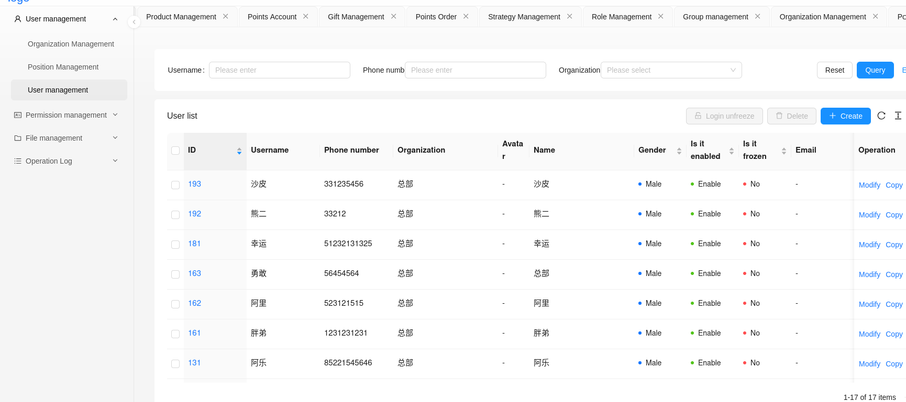
under the "Operation Log", each read, write, and update, is logged with the details of the user who performed it.
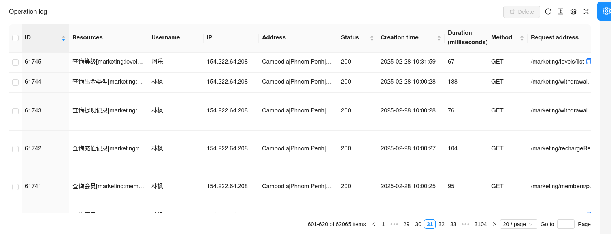
We have downloaded and analyzed all actions performed by the operators, and found that all administrators are working from Cambodia, Hong Kong, Myanmar, and mainland China, whereas the "agents" may be located in the US (New York, New Jersey, Florida, California, are popular locations) and Europe. These agents are acting as recruiters, gaining profits from the people they lure into the scam like any other MLM fraud. We have found several US citizens, among them a self-titled "coach" from Florida who is offering abstinence workshops while working from home to recruit new victims for this Chinese scam operation.
Looking at the access log of the "Users" (administrators), the accepted language for all of them in the HTTP headers sent on every request to the server is Chinese, further contributing to the attribution.
Other than that you can find the expected configuration options of any CMS, including the support links and phone numbers, Notifications sent out to all users, Banners for various parts of the front-end platform, and more:
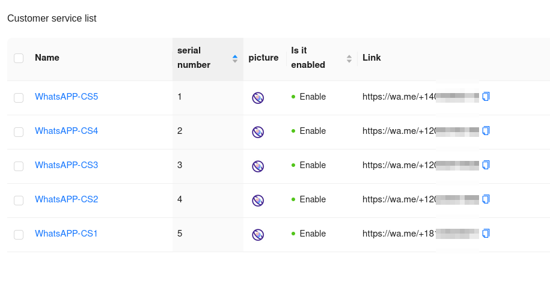
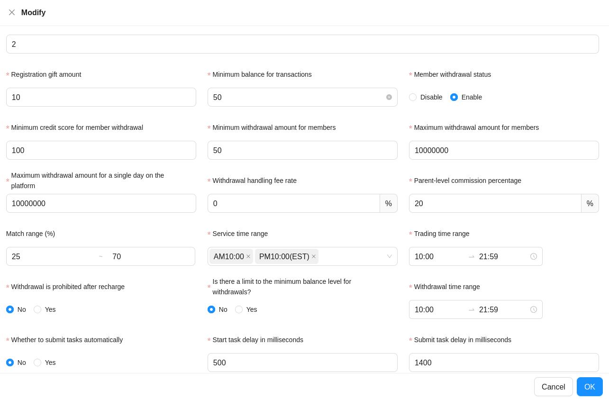
From the dates in the database it seems that the operation has been active since at least November of 2023, with records of stolen funds going back to December of that year.
An administrator of the back-end has almost full control over every part of the scam, including the commission values, service and trading times, minimum and maximum limits for various actions, and more.
Telegram
Most of the systems reviewed in this report, each on its own dedicated server, use the exact same telegram bot called "Wotlk" to communicate with the "super administrators". Luckily, they provide the key and secret to this bot:
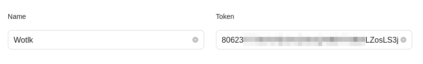
With these credentials we have listened in on some of their conversations, all in Chinese, collecting member details of the "super group" as they call themselves, sporting Telegram premium memberships.
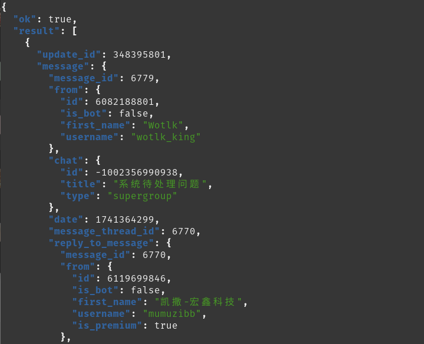
and the administrator:
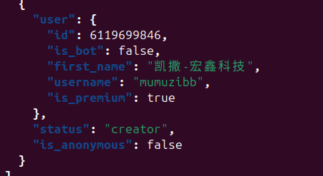
Some of the messages in this channel are about improvement of the platform (all messages are sent in Chinese, we use Google translate to be able to read them in English): The bonus needs to be added with an effective time (for the delayed issuance function), with a pure front-end display function, without any restrictions, this effective time can be modified. \nIn addition, the front-end bonus is counted whether the current interface can meet the current interface, the amount that has been collected and the amount to be collected and
I want to add another type to the backend banner management to give the frontend to use when logging in to the page? Will there be an interception?
Database access
Examining the database, we found that each 'back-end' server hosts its own instance. All of them share the same schema, further establishing that they are running the same platform, but each one has different data inside.
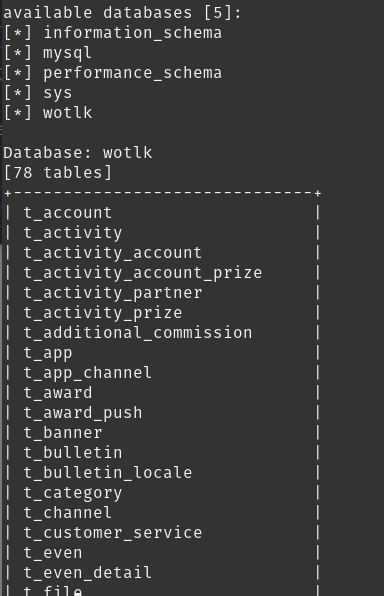
The administrator UI provides control to all data and settings in the Database.
Crypto
During our investigation we identified several cryptocurrency wallets used to send and receive funds from this enterprise. We believe we identified one of the master wallets sending hundreds of thousands of dollars worth of crypto to another wallet at address which holds, at the time of writing, over 50 million USD in various tokens, including the trump meme coin:
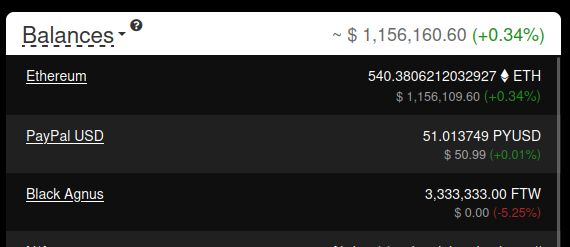
Summary of attribution
There are many indicators that point to a the operators of this operation as being connected to China:
- Accepted languages in the HTTP headers of the operator calls are all
zh-CN, (on telegram we have seen administrators identifying withzh-hans, a less common Chinese locale) which indicates that the browser, or operating system default language, is Chinese. - While the front-end system aimed at the victims shows various languages, none of them is Chinese, the back-end system, which is used by the operators, supports English and Chinese, and these languages only. This may point that the operators work in one of those two languages.
- Usernames of the operators are in Chinese characters, spelling words in Chinese.
- Specifically, the administrator of the Telegram group (mumuzibb) is using Chinese, and participates in Chinese chats on Telegram
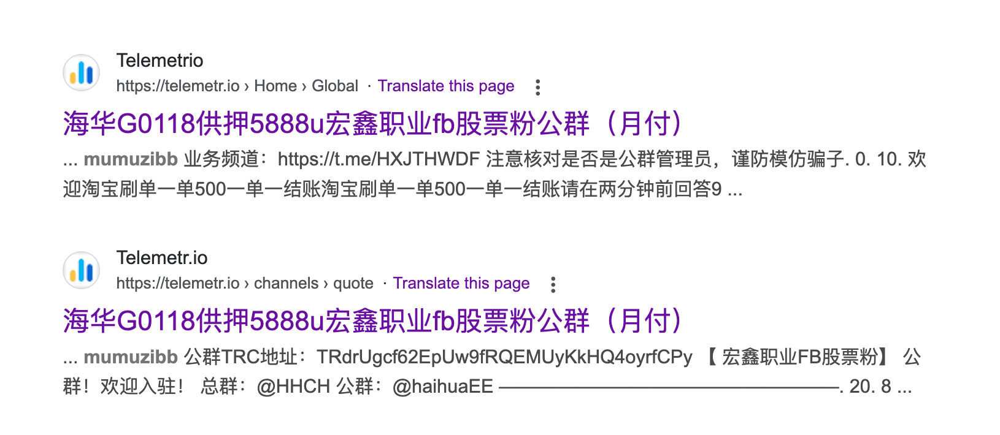
- The internal communication within the "Super group" on telegram and other platforms is done in Chinese.
- The code contains comments in Chinese
- IP addresses of some of the operators are from China, while other from neighboring Hong Kong, a special administrative region controlled by China.
- Looking at the first operations logs, the first user who set up the "websites" and "users" (other operators), using the user ID 1 and the name wotlk used IP addresses from Hong-Kong, with Chinese locale. Once the initial setup was done by wotlk, he invited user admin who also used Chinese locale, with a Cambodian IP address. Other
administrators phone numbers start with +95, which is the country code for Myanmar, a known location of Chinese scam factories.
- Telegram channel: communication is in Chinese.
- Crypto wallets are linked to Chinese individuals.
- Some of the file storage uses the Alibaba Cloud, the largest cloud computing company in China.
List of domain names and IP addresses
Analyzing the first domains we encountered we found that they are hosted on CIDR
137.220.170.0/24 belonging to CTG Server Limited, a hosting provider operating in South East Asia. Based on our past experience we tried looking for domains with the similar pattern on neighboring IP addresses, as well as other CIDRs belonging to the same provider.
Using Hurricane Electric (bgp.he.net) and Security Trails (securitytrails.com) reverse IP searches, we compiled a list of domains and IP addresses set up by the fraudsters as part of this scam. The 'impersonated brand' is a best-effort attempt to deduce the brand the site is trying to impersonate, based on logos, name similarity and other graphics
| Domain | Impersonated brand | Vertical |
|---|---|---|
| neon-ppc.top | Neon Growth | Marketing |
| neon-seo.top | Neon Growth | Marketing |
| neon-web.top | Neon Growth | Marketing |
| neonbusiness.top | Neon Growth | Marketing |
| neondatainc.top | Neon Growth | Marketing |
| neonwebsite.top | Neon Growth | Marketing |
| ngbusinessllc.top | Neon Growth | Marketing |
| tus2v1fhta.top | Neon Growth | Marketing |
| rktdatappcllc.top | Rocket Marketing | Marketing |
| rktmktdosllc.top | Rocket Marketing | Marketing |
| rocket-marketing-ppc.top | Rocket Marketing | Marketing |
| rocket-marketing-seo.top | Rocket Marketing | Marketing |
| rocket-marketing.top | Rocket Marketing | Marketing |
| rocket-mkt.top | Rocket Marketing | Marketing |
| rocketseoinc.com | Rocket Marketing | Marketing |
| tc5la9xvzm.top | Rocket Marketing | Marketing |
| evenboundppc.top | evenbound.com | Marketing |
| evenboundseo.top | evenbound.com | Marketing |
| rc7odfr90x.top | evenbound.com | Marketing |
| work.evenboundppc.top | evenbound.com | Marketing |
| work.evenboundseo.top | evenbound.com | Marketing |
| foymabphwx.top | rapchat.com | Music |
| ppc-rap-chat.top | rapchat.com | Music |
| rapchatdatainc.top | rapchat.com | Music |
| rapchatdataseo.top | rapchat.com | Music |
| rapchatppcspace.com | rapchat.com | Music |
| seo-rap-chat.top | rapchat.com | Music |
| my0x9jorxv.top | Smart Link | Marketing |
| smart-link-business.top | Smart Link | Marketing |
| smart-link-data.top | Smart Link | Marketing |
| smart-link-date.top | Smart Link | Marketing |
| smart-link-dos.top | Smart Link | Marketing |
| smart-link-pcp.top | Smart Link | Marketing |
| smart-link-pcp.top | Smart Link | Marketing |
| smart-link-seo.top | Smart Link | Marketing |
| smartlinkbusiness.top | Smart Link | Marketing |
| smartlinkdigital.top | Smart Link | Marketing |
| smartlinkppcinc.top | Smart Link | Marketing |
| apexarc-ai.com | Apex Arc | Marketing |
| apexarc-business.com | Apex Arc | Marketing |
| apexarc-data.com | Apex Arc | Marketing |
| apexarc-pcp.com | Apex Arc | Marketing |
| apexarc-ppc.com | Apex Arc | Marketing |
| apexarc-x.com | Apex Arc | Marketing |
| apexarcaisite.com | Apex Arc | Marketing |
| global.apexarcaisite.com | Apex Arc | Marketing |
| zhtaibjfj8.com | Apex Arc | Marketing |
| 2f3rmggrz1.top | Jasper AI | Marketing |
| datajasperinc.top | Jasper AI | Marketing |
| gg2kxe6s67.top | Jasper AI | Marketing |
| jasperppc.top | Jasper AI | Marketing |
| jasperseo.top | Jasper AI | Marketing |
| seojasperllc.top | Jasper AI | Marketing |
| norionbusiness.top | norion.com | Crypto |
| noriondata.com | norion.com | Crypto |
| norionpcpinc.top | norion.com | Crypto |
| norionppc.top | norion.com | Crypto |
| norionseo.top | norion.com | Crypto |
| p1ouw3i5wp.top | norion.com | Crypto |
| d5654g7jij.top | VistaRise Hospitality Services India | Travel |
| vistarise.top | VistaRise Hospitality Services India | Travel |
| vistarisebusiness.top | VistaRise Hospitality Services India | Travel |
| vistarisedata.top | VistaRise Hospitality Services India | Travel |
| vistariseppc.top | VistaRise Hospitality Services India | Travel |
| vistariseseo.top | VistaRise Hospitality Services India | Travel |
| cisiondataspace.com | cision.com | Marketing |
| cisionpcpinc.com | cision.com | Marketing |
| cisionppc.top | cision.com | Marketing |
| n8jhepwdl9.top | cision.com | Marketing |
| 6zw0xaubym.com | Digital Connect | Marketing |
| digitalconnect-seo.com | Digital Connect | Marketing |
| digitalconnect-x.com | Digital Connect | Marketing |
| digitalconnectai.com | Digital Connect | Marketing |
| digitalconnectbusiness.com | Digital Connect | Marketing |
| digitalconnectdata.com | Digital Connect | Marketing |
| digitalconnectppc.com | Digital Connect | Marketing |
| global.digitalconnect-seo.com | Digital Connect | Marketing |
| global.digitalconnectai.com | Digital Connect | Marketing |
| global.digitalconnectbusiness.com | Digital Connect | Marketing |
| global.digitalconnectdata.com | Digital Connect | Marketing |
| global.digitalconnectppc.com | Digital Connect | Marketing |
| cognitopsppc.com | cognitops.com | Software |
| cognitopsseo.com | cognitops.com | Software |
| q17dkahubn.com | cognitops.com | Software |
| firstpier-dataseo.com | firstpier.com | Marketing |
| global.firstpier-dataseo.com | firstpier.com | Marketing |
| p3et31p3hh.top | firstpier.com | Marketing |
| delantedata.com | delante.co | Marketing |
| g4xst1jqj9.top | delante.co | Marketing |
| ppc-delante.com | delante.co | Marketing |
| 0j10uc2xf6.top | fera.ai | Marketing |
| 5rydfzf73g.com | fera.ai | Marketing |
| fera.biz | fera.ai | Marketing |
| fera.ltd | fera.ai | Marketing |
| global.fera.biz | fera.ai | Marketing |
| global.fera.ltd | fera.ai | Marketing |
| tkmallpromohub.top | fera.ai | Marketing |
| blixauro-ppc.com | blixauro.com | Marketing |
| blixauro-seo.com | blixauro.com | Marketing |
| blixaurobusiness.com | blixauro.com | Marketing |
| blixaurodataspace.com | blixauro.com | Marketing |
| blixauropcpinc.com | blixauro.com | Marketing |
| zldty07di5.com | blixauro.com | Marketing |
| bookingpcp.com | booking.com | Travel |
| bookingppc.com | booking.com | Travel |
| expediappc.top | expedia.com | Travel |
| expediaseo.top | expedia.com | Travel |
| f1ebp8t25j.com | expedia.com | Travel |
| j816emy69b.top | quantcast.com | Marketing |
| ooit5xn0l1.top | quantcast.com | Marketing |
| quant-cast-data.top | quantcast.com | Marketing |
| quant-cast-pcp.top | quantcast.com | Marketing |
| quant-cast-ppc.top | quantcast.com | Marketing |
| quant-cast-seo.top | quantcast.com | Marketing |
| quantbusinessgp.top | quantcast.com | Marketing |
| quantcastdatainc.top | quantcast.com | Marketing |
| quantcastppc.top | quantcast.com | Marketing |
| quantcastseo.top | quantcast.com | Marketing |
| quantcastseollc.top | quantcast.com | Marketing |
| quantdatainc.top | quantcast.com | Marketing |
| backend.roadrunnerseoinc.top | Road Runner Records | Music |
| backend.rralbumspromo.top | Road Runner Records | Music |
| backend.rrmusicalbumspromo.top | Road Runner Records | Music |
| backend.rrmusicppcspace.top | Road Runner Records | Music |
| backend.rrmusicspacewebplayer.top | Road Runner Records | Music |
| backend.rrrecordsclub.com | Road Runner Records | Music |
| backend.rrrecordsgroupboost.com | Road Runner Records | Music |
| backend.rrrecordsmusicplayer.com | Road Runner Records | Music |
| backend.rrrecordsspace.com | Road Runner Records | Music |
| road-runner-web.top | Road Runner Records | Music |
| roadrunnermusicspace.top | Road Runner Records | Music |
| roadrunnerseoinc.top | Road Runner Records | Music |
| rralbumspromo.top | Road Runner Records | Music |
| rrmusicalbumspromo.top | Road Runner Records | Music |
| rrmusicdatainc.top | Road Runner Records | Music |
| rrmusicdataspace.top | Road Runner Records | Music |
| rrmusicppcspace.top | Road Runner Records | Music |
| rrmusicpromohub.top | Road Runner Records | Music |
| rrmusicrecordsppc.top | Road Runner Records | Music |
| rrmusicspace.top | Road Runner Records | Music |
| rrmusicspacewebplayer.top | Road Runner Records | Music |
| rrmusicwebplayer.top | Road Runner Records | Music |
| rrrecordsclub.com | Road Runner Records | Music |
| rrrecordsgroupboost.com | Road Runner Records | Music |
| rrrecordsmusicplayer.com | Road Runner Records | Music |
| rrrecordsspace.com | Road Runner Records | Music |
| 76worh4afo.top | digital-hunch.com | Marketing |
| digital-hunch-ppc.top | digital-hunch.com | Marketing |
| digital-hunch-seo.top | digital-hunch.com | Marketing |
| rn2j7kne0z.top | thinktandem.io | Marketing |
| think-tandem-ppc.top | thinktandem.io | Marketing |
| think-tandem-seo.top | thinktandem.io | Marketing |
| 269nrl8mvm.top | brandnitions.com | Marketing |
| brandnitions.top | brandnitions.com | Marketing |
| brandnitionsdata.com | brandnitions.com | Marketing |
| brandnitionspcp.com | brandnitions.com | Marketing |
| brandnitionsppc.top | brandnitions.com | Marketing |
| brandnitionsseo.top | brandnitions.com | Marketing |
| business-omnitail.top | omnitail.net | Marketing |
| data-omnitail.top | omnitail.net | Marketing |
| omnitail.top | omnitail.net | Marketing |
| omnitailppc.top | omnitail.net | Marketing |
| omnitailseo.top | omnitail.net | Marketing |
| 1ybppcshop.top | Zuchetti | Travel |
| 1ybseomall.top | Zuchetti | Travel |
| businesslybra.com | Zuchetti | Travel |
| lybrapromohub.com | Zuchetti | Travel |
| zzx26cha6b.com | Brenton Way | Marketing |
| brenton-way-ppc.com | Brenton Way | Marketing |
| brenton-way-seo.com | Brenton Way | Marketing |
| wsx3umkwgb.com | Brenton Way | Marketing |
| 8pvsrpdc53.com | U production Group | Marketing |
| uproductiongroupboost.com | U production Group | Marketing |
| uproductionpromomusic.com | U production Group | Marketing |
| hyperguestseo.top | HyperGuest | Travel |
| mbuox3iyzx.top | HyperGuest | Travel |
| hyperguestppc.top | HyperGuest | Travel |
| nxnbusinessinc.top | Nexxen | Marketing |
| work.nexxen.net | Nexxen | Marketing |
| 9bcu6lzmvu.top | Nexxen | Marketing |
| groupboostwish.top | WISH | |
| wishppcinc.top | WISH | |
| w-i-s-h-promohub.top | WISH | |
| wishdatallc.top | WISH | |
| 8hqbtycaif.top | WISH | |
| shirudigidata.top | ShiruDigi | Marketing |
| xrag5tsiov.top | ShiruDigi | Marketing |
| shirudigiseo.top | ShiruDigi | Marketing |
| propointppcllc.top | ||
| 54kciga7qo.top | ||
| global.propointseoinc.top | ||
| propointseoinc.top | ||
| global.propointppcllc.top | ||
| sound-cloud-dataseo.top | SoundCloud | Music |
| sound-cloud-business.top | SoundCloud | Music |
| datasoundcloud.top | SoundCloud | Music |
| backend.datasoundcloud.top | SoundCloud | Music |
Technical infrastructure
The infrastructure of the scam network is designed using outdated technologies and methodologies. It is evident that the individual responsible for their technology has extensive experience in software development. However, their approach suggests a lack of exposure to the significant technological advancements of the past 15 years. This outdated perspective has also resulted in a complete disregard for operational security (OpSec) best practices, leaving the entire network highly vulnerable to exposure.
The software is developed in Java; however, database statements are concatenated rather than prepared, a practice that was common in the early 2000s but is now considered outdated and insecure. While some passwords are hashed using bcrypt - an algorithm introduced in the late 1990s - others are stored without any encryption or hashing.
Additionally, critical credentials, including Alibaba Cloud access keys and Telegram administrative secrets, are not encrypted. Some of these sensitive details are even exposed in the user interface, further compromising security and potentially revealing the identities of those involved in the operation.
The hosting infrastructure is configured in a manner that suggests a lack of technical expertise rather than a deliberate strategy. By adopting modern DevOps practices, the operation could reduce costs by tens of thousands of dollars per month while significantly improving security and performance. The reliance on outdated hosting methods, rarely seen in contemporary systems, results in both excessive expenses and increased vulnerabilities.
This combination of inefficiency and poor security measures suggests that those behind the operation are not highly skilled technologists but rather individuals adhering to outdated methodologies.
Wider Context
In recent months, an increasing number of media outlets have reported on the emergence of Chinese "Scam Factories" that engage in the kidnapping of individuals, holding them captive, and coercing them into perpetrating scams against Western targets. Victims who fail to meet the quotas imposed by their captors face severe punishment and humiliation. Investigative pieces from prominent or ganizations such as the BBC, New York Times, CNN have highlighted these operations, featuring interviews with victims and shedding light on the brutal and inhumane conditions within these facilities.
While we cannot definitively link the operation discussed in this report to the " KK Park " compound in Myanmar - allegedly run by Chinese criminals targeting Westerners through tactics such as "recharge scams" - there are notable similarities between the two, including a direct connection between the Chinese operators and agents in Myanmar.
This report aims to be the first to provide a detailed examination of the technological infrastructure utilized against the victims of these scams, rather than focusing solely on the human trafficking aspect of those forced to execute the scams. By uncovering the underlying infrastructure, we hope to assist future researchers in identifying and exposing similar operations.
Who we are
Noam Rotem and Ran Locar are members of CyberCyber Labs, a loosely organized group of security researchers who scan the web to find and report data leaks before they can be exploited. Some of our past discoveries include the personal data of everyone in Ecuador, Biostar2 biometric system, the US domestic drone platform and many others.